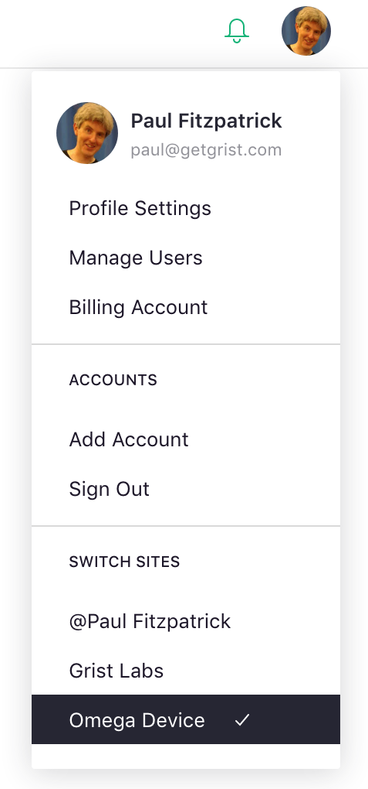

Team Sharing#
We saw how to share individual documents with other users in the Sharing article. Team sites give your further control, allowing you to share collections of documents in whole or in part with others.
Team sites are a paid feature. To determine whether you have a team site, look at the top left of the screen. If you see a name starting with the “@” symbol, you have a personal site, not a team site. To use the features in this section, upgrade to a team plan.
 a personal site
a personal site
 a team site
a team site
If you have a team site but aren’t seeing it, click on the circle with your profile picture or initial on the top right of the screen, and check the list of sites at the bottom of the menu.

Not seeing your team site? Try selecting the “Add account” option in the same menu if the team site might be linked to a different email address.
A fresh team site will look something like this, ready to be filled with Grist documents and shared with your team.

If a colleague has shared a team site with you, you’ll see the same thing, but depending on the role they chose for you, some options we will describe in this section may be inactive. If you need those options, ask your colleague to change your role.
For a team site you own, you can create documents, create workspaces, or immediately start sharing the site with others. To share the site, click on the circle with your profile picture or initial on the top right of the screen. Then select the “Manage Users” option.

You can now invite people just as you did for individual documents in Sharing.

Just as for documents, you can invite people as viewers, editors, or owners of the team site. All documents within the site will be accessible to those people, unless you turn off the “Inherit access” sharing option for individual workspaces or documents (see Workspaces).
Roles#
There are three primary roles supported by Grist for team sites:
-
Viewer: allows a user to view the site but not make any changes to it. A viewer will be allowed to view all workspaces and documents within the site unless otherwise specified.
-
Editor: allows a user to view or make changes to the site and all its workspaces and documents (unless otherwise specified). However, the sharing settings for the site, its workspaces, and its documents cannot be changed by an editor.
-
Owner: gives a user complete permissions to the site’s workspaces and documents, including their sharing settings.
None of these roles give access to billing information or management. Billing managers can be added via the “Billing Account” option. Click on the circle with your profile picture or initial on the top right of the screen, and select “Billing Account”.